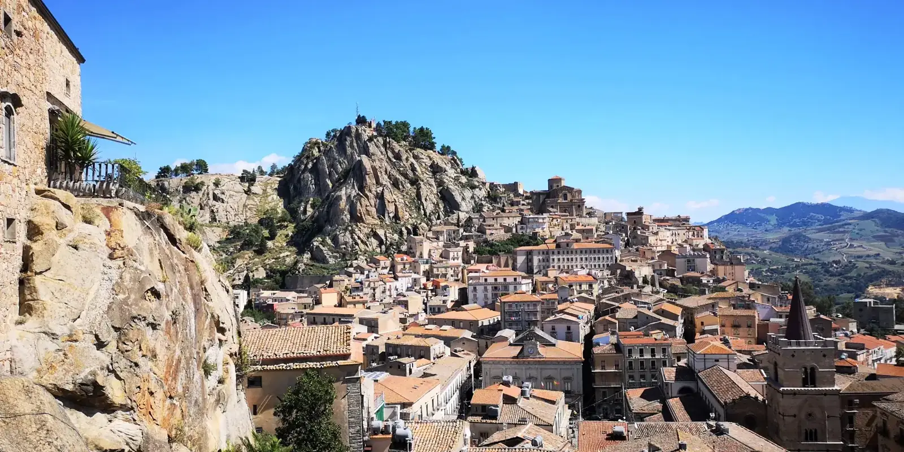
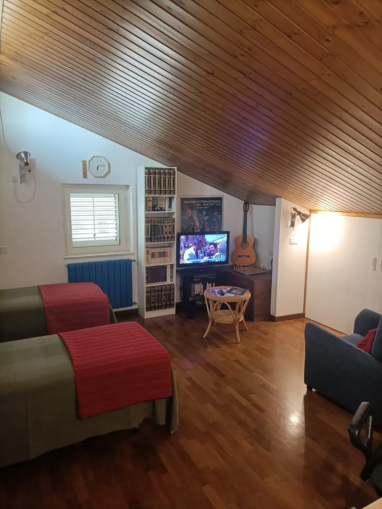
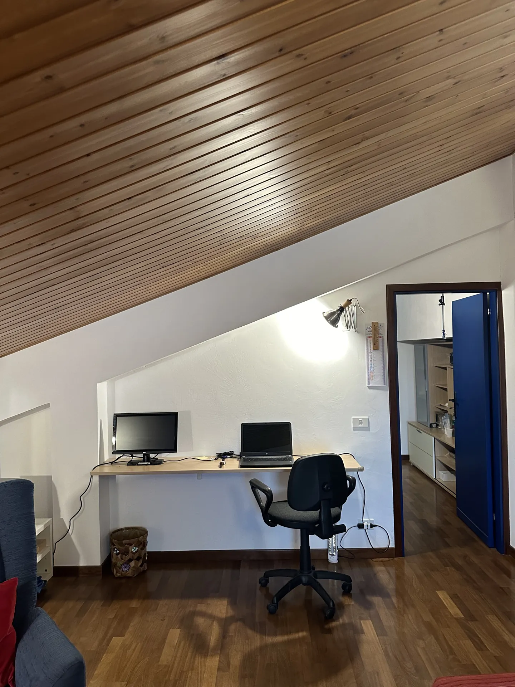
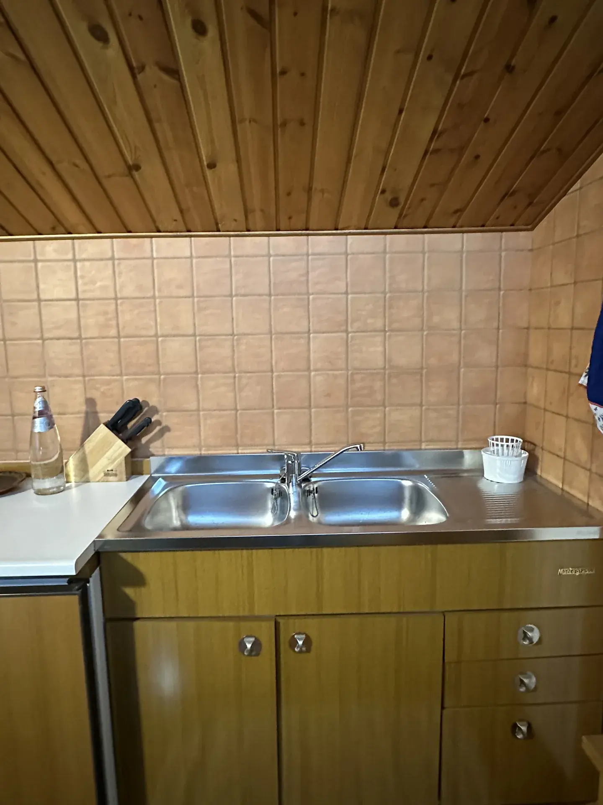
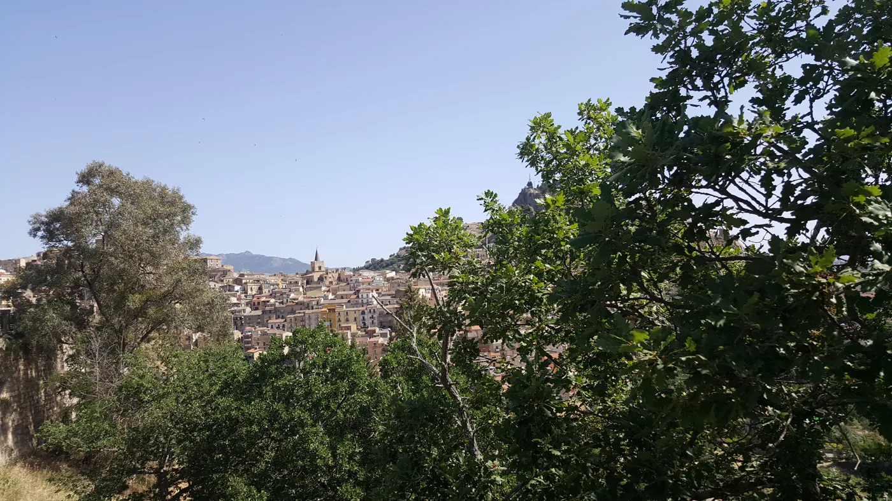
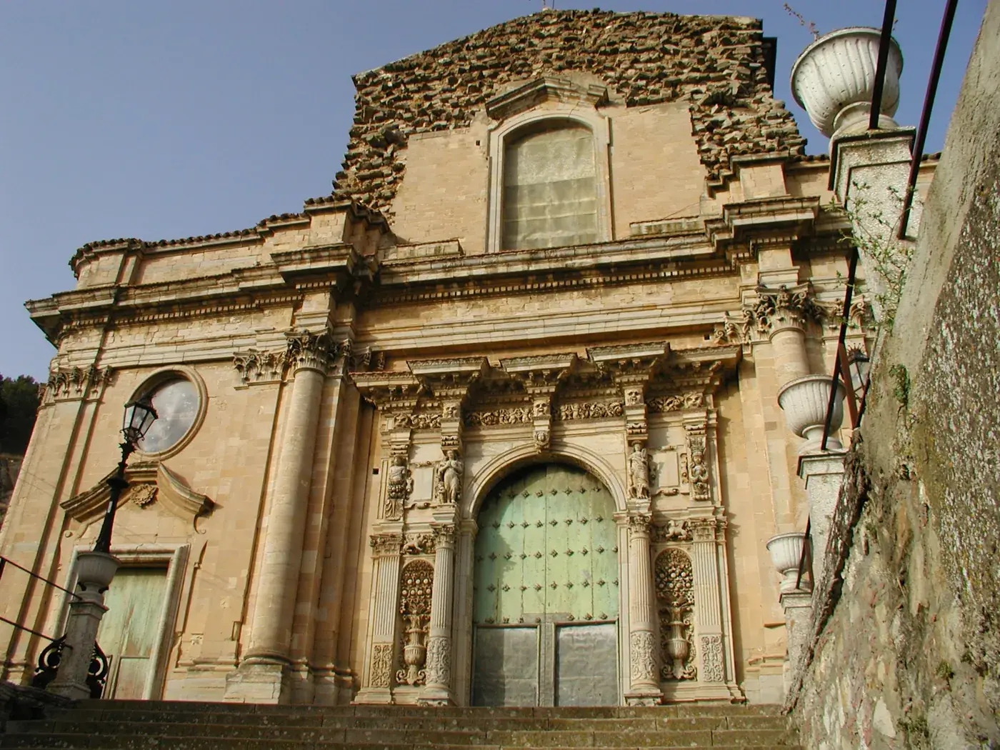
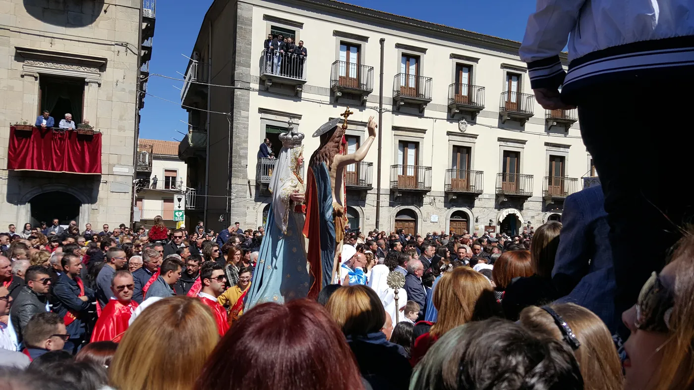
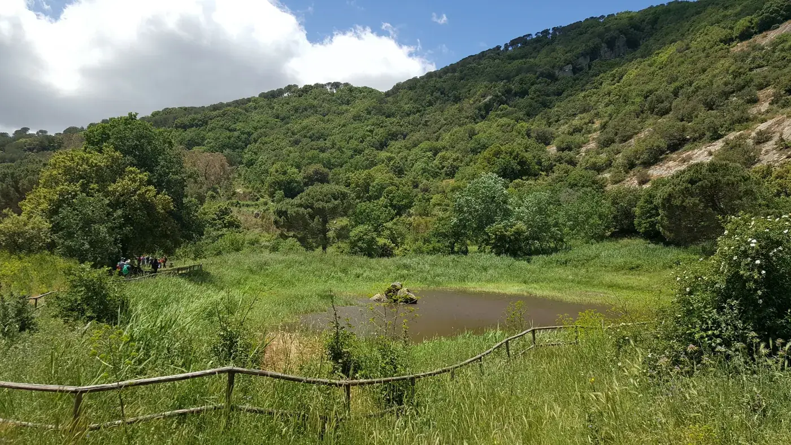
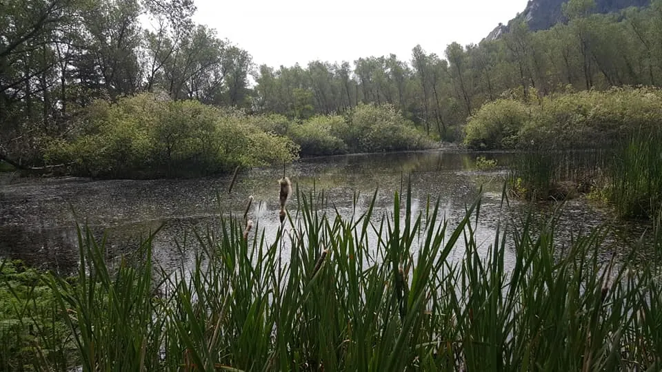
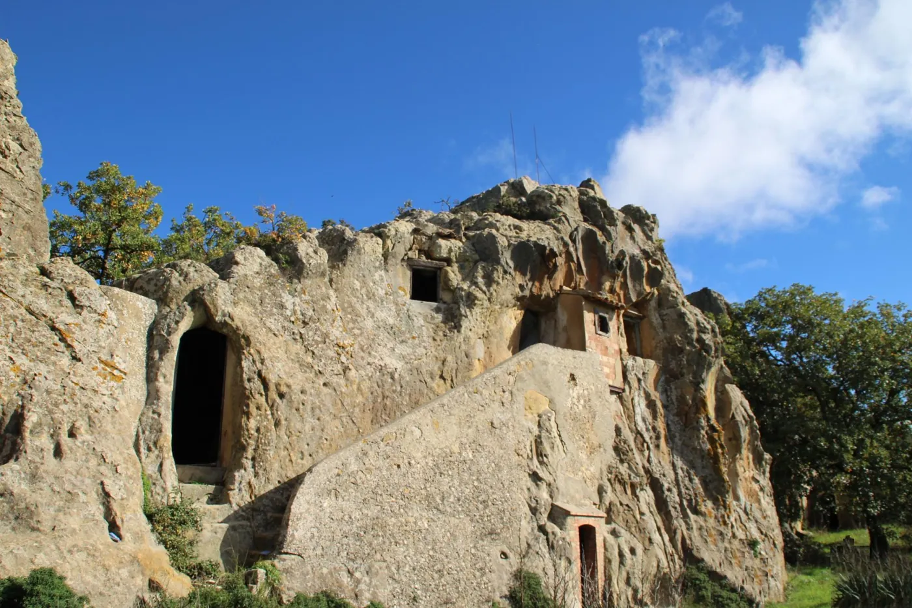

La Mansarda, il tuo rifugio nel cuore della Sicilia
Un bilocale autentico nel centro storico di Nicosia: soffitti in legno, vista sui monti e tutto il comfort per due. Prenota diretto, al miglior prezzo e senza commissioni.
Una tipica casa siciliana, calda e tranquilla
La Mansarda è un bilocale nel cuore del centro storico di Nicosia, con soffitti in legno a vista, arredi dal sapore vintage e un'atmosfera rilassata. Pensato per coppie, viaggiatori singoli o famiglie con un bambino in cerca di un soggiorno autentico.
Dispone di una camera con due letti singoli, cucina completa, bagno privato, aria condizionata e riscaldamento, TV con Fire Stick e una scrivania ideale per chi lavora da remoto. All'arrivo trovi un piccolo kit di benvenuto e la colazione di base inclusa.
Nota: l'appartamento si trova al 4º piano senza ascensore (4 rampe di scale).
Prenota il tuo soggiorno


Dai un'occhiata a ogni angolo
← Scorri per vedere tutte le foto →Tutto il comfort, incluso
- ✓ WiFi gratuito
- ✓ Cucina completa (frigo, forno, microonde)
- ✓ Macchina del caffè e bollitore
- ✓ Aria condizionata
- ✓ Riscaldamento
- ✓ TV con Fire Stick
- ✓ Spazio di lavoro dedicato
- ✓ Parcheggio privato gratuito
- ✓ Colazione inclusa
- ✓ Bagno privato con set di cortesia
- ✓ Asciugacapelli
- ✓ Vista monti e giardino
- ✓ Pulizia accurata
- ✓ Rilevatori fumo e monossido
- ✓ Chitarra, scacchi e poltrona relax
Scopri Nicosia, la Sicilia autentica
Borgo medievale nel cuore dei Nebrodi, lontano dal turismo di massa: vicoli, chiese, panorami sui monti e natura a pochi passi dall'appartamento.

Centro storico
Vicoli medievali, scorci e piazze a pochi minuti a piedi.

Basiliche e cattedrale
San Nicola, Santa Maria Maggiore e portali barocchi.

Tradizioni e feste
Eventi, processioni e sapori della cultura locale.

Monte Altesina
Trekking e panorami sul cuore della Sicilia.

Laghi e natura
Laghetti Campanito e riserve dei Nebrodi.

Insediamenti rupestri
Storia millenaria scavata nella roccia.
Come arrivare
≈ 110 km in auto
≈ 180 km in auto
≈ 45 km in auto
≈ 90 km in auto
Distanze indicative in auto, da confermare.
→ Leggi la guida: cosa vedere a Nicosia
I tuoi host: Paolo e Stefano
La Mansarda è una casa di famiglia, non un albergo. Quando arrivi ti accogliamo di persona, ti consegniamo le chiavi e ti raccontiamo i posti giusti dove mangiare e cosa vedere a Nicosia. Troverai un piccolo kit di benvenuto e la colazione di base pronta per te.
Rispondiamo in fretta a ogni messaggio: per noi conta che ti senta a casa, dal primo contatto fino alla partenza.
Cosa dicono gli ospiti
6 recensioni
42 recensioni
Recensioni reali raccolte dai profili Airbnb e Booking della struttura.
Disponibilità e prenotazione
Scegli le date e inviaci la richiesta: verifichiamo la disponibilità e ti rispondiamo subito. Diretto, senza commissioni di piattaforma.
Cancellazione rigida: rimborso del 50% fino a 30 giorni prima dell'arrivo. Pagamento concordato direttamente con l'host. Colazione inclusa.
Domande frequenti
Quali sono gli orari di check-in e check-out?
C'è il parcheggio?
Sono ammessi animali?
Sono ammessi i bambini?
C'è l'ascensore?
Come funziona il pagamento?
Qual è la politica di cancellazione?
Parla con noi
Per informazioni, date o richieste speciali, scrivici: rispondiamo in fretta.